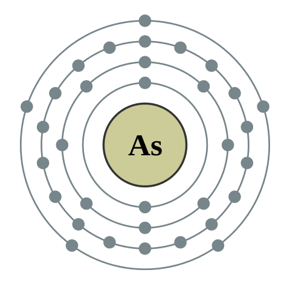

←
→
Arsenic is a chemical element with symbol As and atomic number 33. Arsenic occurs in many minerals, usually in combination with sulfur and metals, but also as a pure elemental crystal. Arsenic is a metalloid. It has various allotropes, but only the gray form, which has a metallic appearance, is important to industry.
The primary use of arsenic is in alloys of lead (for example, in car batteries and ammunition). Arsenic is a common n-type dopant in semiconductor electronic devices, and the optoelectronic compound gallium arsenide is the second most commonly used semiconductor after doped silicon. Arsenic and its compounds, especially the trioxide, are used in the production of pesticides, treated wood products, herbicides, and insecticides. These applications are declining due to the toxicity of arsenic and its compounds.
A few species of bacteria are able to use arsenic compounds as respiratory metabolites. Trace quantities of arsenic are an essential dietary element in rats, hamsters, goats, chickens, and presumably other species, including humans. However, arsenic poisoning occurs in multicellular life if quantities are larger than needed. Arsenic contamination of groundwater is a problem that affects millions of people across the world.
The United States' Environmental Protection Agency states that all forms of arsenic are a serious risk to human health. The United States' Agency for Toxic Substances and Disease Registry ranked arsenic as number 1 in its 2001 Priority List of Hazardous Substances at Superfund sites. Arsenic is classified as a Group-A carcinogen.